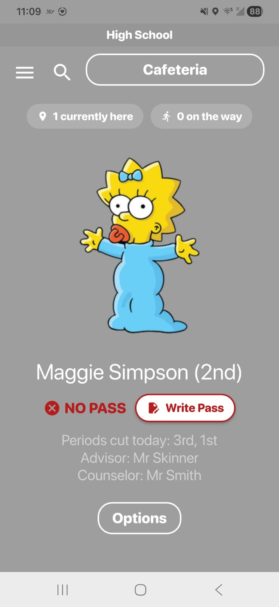
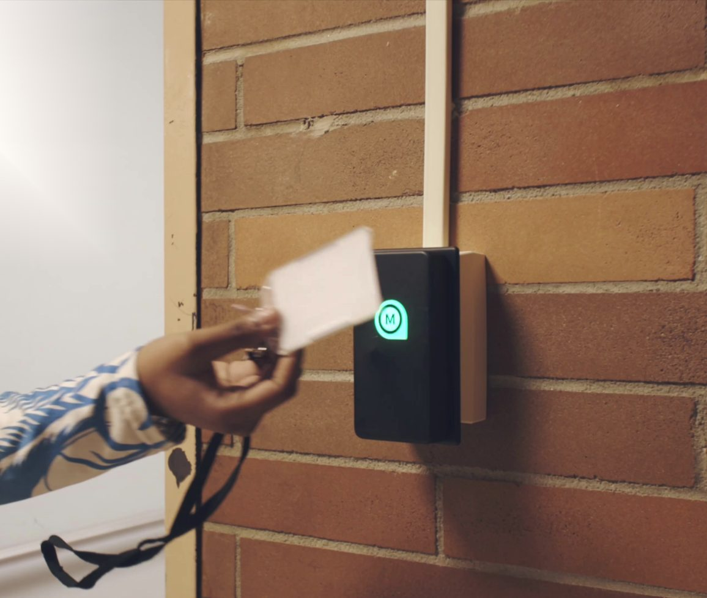

When something goes wrong at school, two questions matter more than any others. Is everyone safe? And where is everyone right now?
You hope you never have to ask them. But if a building has to evacuate, or go into a controlled release, the answers can't be a guess. Families are on their way. Staff are counting heads. And the whole response depends on one thing: knowing where every student is.
What reunification is, and why accountability comes first

Reunification is the process of safely returning students to their parents or guardians after an emergency, when a normal dismissal isn't possible. Many schools follow the Standard Reunification Method, introduced by the "I Love U Guys" Foundation, which thousands of schools across the US and Canada now use to plan and practice controlled releases.
At its core, reunification is an accountability process. It works by tracking the physical location of students, staff, and arriving parents, and matching each child to the right adult before releasing them. It's careful and deliberate by design, which also means it takes time and patience to do right.
Here's the catch. You can't reunite a student you can't locate. If your first move in an emergency is figuring out who was where, you've lost minutes you don't have. So the real foundation of any reunification plan is simple: at any moment, you already know where your students are.
Knowing where students were, the second it matters
This is the part MOOV was built for.
Because students tap in with their ID card as they move through the building and into classrooms, there's always a live record of where each student is and where they were last. When a normal day turns into an emergency, that record is already there. You're not starting from zero.
Charlie Rizzuto, an assistant principal at Islip High School, told us this is what he values most about MOOV:
"If we ever had to go into a real emergency situation, based on where our students tapped in last, we know where our students are, which could help us respond not only to the situation at hand, but also to the well-being of each individual student in our building."
That last part matters. It isn't only about the count. It's about every single kid, and being able to account for them one by one.
Meghan Stern, the principal at Islip Middle School, put it in the plainest terms:
"If in the event of any type of emergency, I know which classrooms are being used. I know which students are in which classrooms."
Knowing which rooms are occupied and who's in them turns a chaotic search into a clear picture. And that picture is live. As Ernesto Narvaez, an IT technician at Comsewogue, said, "We are able to see in real time where the students are at all times... So that has been an amazing tool for all of us over here at the school, especially for the security team."
Tapping as a way of reunifying
Most head counts still happen on a clipboard. Classes gather in the parking lot, each teacher counts heads, and reads the number back over a walkie-talkie. It's slow, it's easy to miss a student who ended up with another class, and only one person sees the full picture at a time.
Tapping is faster and more accurate. Teachers can have students tap their IDs on a handheld device, kiosk, or even their own phone with the MOOV app at the gathering point and they're accounted for instantly.

Because it syncs live, admins and whoever is coordinating the response all see the same building-wide status at once, instead of hearing it one group at a time over the radio. You can tell right away which students are accounted for and which still aren't.
And this works in an emergency because it's already running every normal day. Students tap in, teachers verify, and the system records where everyone is. So accountability in a crisis isn't a new process you switch on under stress. It's the same data you use every day to find a student or check who's in the building. That's what makes it reliable, because an emergency is the worst possible time to learn something new.
Integrate MOOV into Safety Drills
MOOV works during safety drills too, not just on a normal schedule. Dr. Mike Mosca, principal at Comsewogue High School, put that to the test with a lockdown drill. He ran it during a passing period, which is the hardest possible moment, when students are scattered through the hallways instead of sitting in class. The rule was simple: when the drill started, every student had to get into the nearest classroom and tap in.
In seconds, the taps gave the school a live picture of exactly who was where. Instead of teachers trying to eyeball a crowded hallway and radio in their best guess, every student was accounted for in the room they ended up in. It turned the messiest part of the day into a clean, verifiable count, and it showed that MOOV isn't only an everyday tool. It folds right into the drills schools already run.
Accountability that supports your plan, not replaces it
To be clear, MOOV is not a substitute for a full reunification plan, and it doesn't replace the drills, the roles, or the family communication that a method like SRM lays out. What it does is strengthen the foundation the whole plan stands on.
A reunification plan answers what your team does when an emergency happens. MOOV helps answer the question that comes first: where is everyone right now, and where were they last. When you already know that, every step after it goes faster and safer.
That's the goal. Give your team an accurate, live account of every student, every day, so that if the worst ever happens, you're responding from knowledge instead of guesswork.